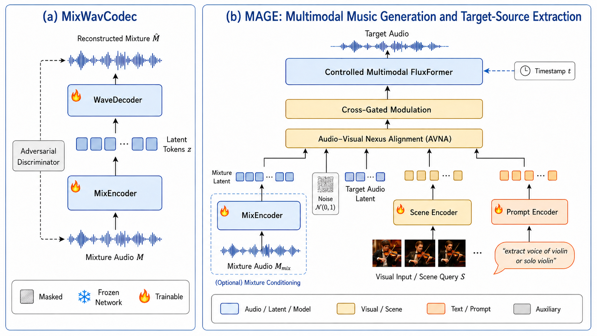
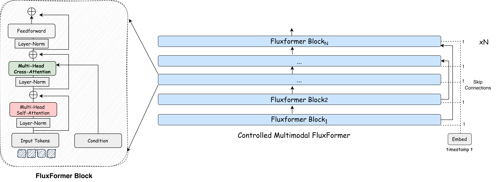
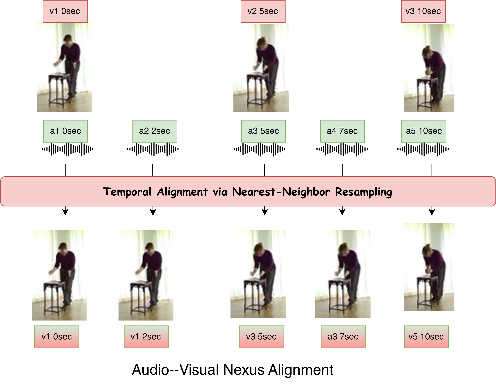
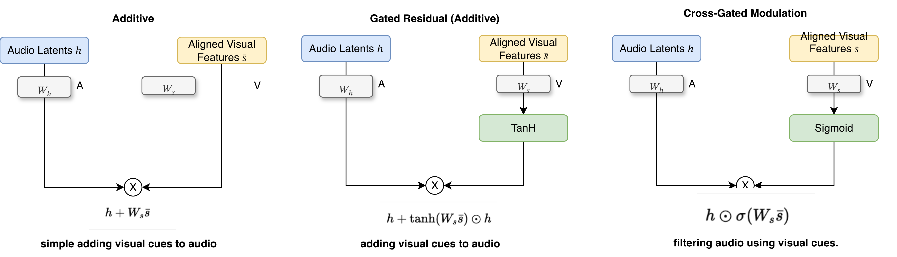
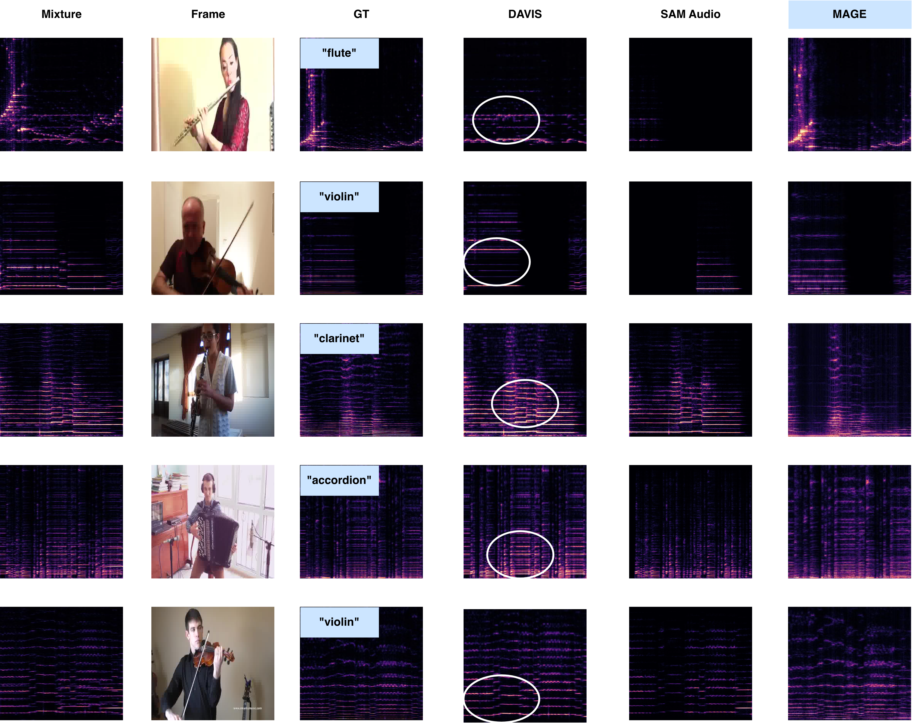
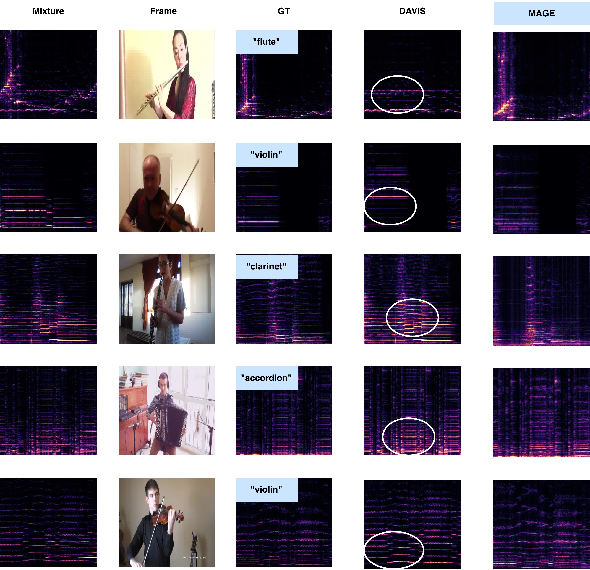

Recent advances in multimodal audio generation have enabled music synthesis from text, visual cues, and other high-level conditions. However, most systems are designed for a single operating mode: either generating music without a reference mixture or extracting a target source from an existing mixture. This fixed-task design limits their use when different combinations of text, visual, and mixture inputs are available.
To address this gap, we propose MAGE, a modality-agnostic framework for conditional music generation and mixture-grounded target-source extraction within a shared continuous latent space. Our approach introduces three key components: (1) a Controlled Multimodal FluxFormer that models the conditional flow from noise to a target audio latent, enabling the same backbone to operate with or without a mixture condition; (2) Audio–Visual Nexus Alignment (AVNA) that maps frame-level visual features onto the audio latent sequence, allowing visual evidence to condition the generation process at the audio-token level; and (3) a cross-gated modulation mechanism that uses the aligned visual representation to regulate intermediate audio features, while text provides separate semantic guidance.
We further train MAGE with dynamic modality masking, exposing the same model to text-only, visual-only, joint text–visual, mixture-conditioned, and unconditional configurations. Experiments on the MUSIC benchmark show that MAGE provides a shared conditioning interface across both settings, and that the proposed alignment and gating components improve interference suppression in the extraction task.

Figure 1: MAGE Framework. The shared conditional latent model handles both mixture-free generation and mixture-grounded target-source extraction through a unified conditioning interface.

Figure 2: Controlled Multimodal FluxFormer. Flow-matching Transformer backbone that predicts target audio latents under all supported conditioning combinations.

Figure 3: Audio–Visual Nexus Alignment (AVNA). Maps frame-level visual features onto the audio latent sequence for token-level visual conditioning.

Figure 4: Cross-Gated Visual Modulation. The aligned visual representation regulates intermediate audio features via cross-gated attention, while text provides a separate semantic pathway.

Figure 5: Spectrogram Analysis. Qualitative spectrogram comparisons showing MAGE's ability to generate and separate music sources under different modality conditions.

Figure 6: State-of-the-Art Comparison. MAGE evaluated on the MUSIC benchmark under separate protocols for mixture-free generation and mixture-grounded target-source extraction. Compared against specialized demixing baselines and promptable extraction systems.
Dedicated separation systems are treated as valid task-specific baselines, while MAGE evaluates how a shared conditional model performs across both mixture-free generation and mixture-grounded extraction. The AVNA and cross-gated modulation components are shown to improve interference suppression in ablations.
@article{saleem2026mage,
title = {{MAGE}: Modality-Agnostic Music Generation
and Target-Source Extraction},
author = {Saleem, Muhammad Usama and Tejasvi, Ravi
and Xu, Tianyu and Nongpiur, Rajeev
and Chatterjee, Ishan and Patel, Mayur
Jagdishbhai and Wang, Pu},
journal = {arXiv preprint arXiv:2604.09803},
year = {2026}
}